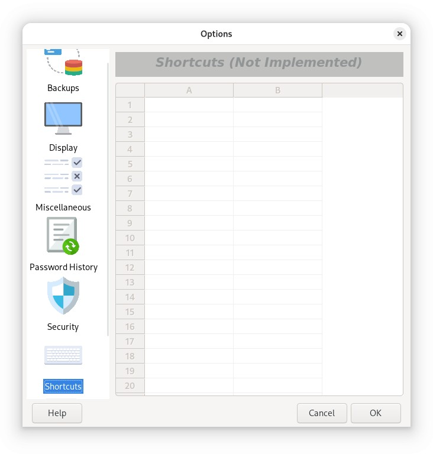

On Linux, changing Keyboard Shortcuts and setting up the Application Hot Key through Password Safe is not yet implemented.
However, you can still use the predefined keyboard shortcuts for main menu items:
Hold down the Alt key to reveal accelerators for the main menu. Once the menu is open, you'll see underlined letters on menu items; in some cases, you may need to press Alt again to display them.
On macOS, keyboard shortcuts are displayed on the right side of menu items in the main menu bar. They may be represented by symbols for modifier keys like Command, Option, Shift, and Control. If a menu item does not have a shortcut (or you want to override shortcut for an existing item), you can add a custom one by going to Keyboard Shortcuts in System Settings.
On Windows, Password Safe allows you to define key sequences (shortcuts) that perform specific operations in the application. This tab allows you to control and review the shortcuts, as follows.
When checked, pressing the keys in the sequence to the right will restore Password Safe from the system tray, if minimized, or bring it to the front, if obscured by other applications. The sequence may be changed when the option is checked.
To change a shortcut (or add a new one), select the row with the action you'd like to change, then click on the 'Shortcut Key' field for that entry. Any key combination that you select will be defined as the shortcut for this action. For example, to get the File Properties dialog box to appear when Control, Alt and 'p' are pressed, select the "File >> Properties" row, click on the 'Shortcut Key' field, and then press the Control Alt and p key. The text 'Ctrl+Alt+P' will appear in the Shortcut Key field, and once you press OK, the change will take effect. For more details on the keys that can (and cannot) be defined as shortcuts, see here.
Note that you can define shortcuts where there currently are none, as well as replacing the defaults with those of your choosing. The shortcuts will be stored in your preference file, and will be available the next time you start Password Safe.
If you decide to remove a shortcut or revert to the default shortcut for a given action, just select the desired 'Shortcut Key' field and right-click. A popup menu will appear, allowing you to do so. To revert all shortcuts to their default values, click on 'Reset All Program Shortcuts'.